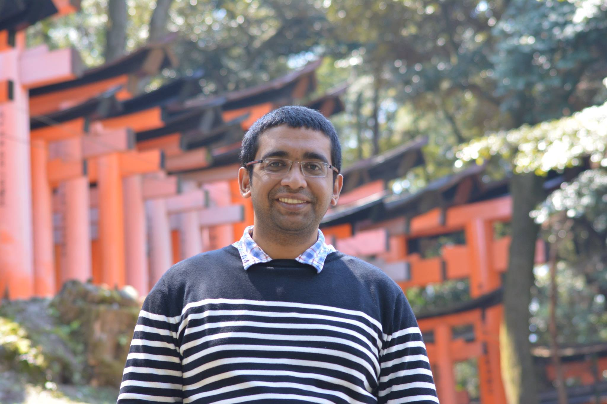

Sougata Sen 
I am currently an Assistant Professor in the Department of Computer Science and Information Systems at BITS Pilani Goa Campus. Prior to joining BITS, I completed two postdocs, one at Northwestern University, and another at Dartmouth College. I earned my Ph.D. in 2017 from the School of Information Systems at Singapore Management University, where I was supervised by Prof. Archan Misra.
My research is at the crossroad of computer science, electrical and electronics engineering, preventive medicine, and human computer interaction. I build systems that can accurately, automatically and unobtrusively detect, monitor, and predict various human activities and behaviors, as they happen in the physical world. To realize these systems, I apply appropriate machine learning (ML) techniques on sensor data from personal devices such as smartphones and wearables, and infrastructure-based Internet-of-Thing (IoT) devices. I also work towards developing techniques and identifying approaches that can increase the acceptability of these systems by reducing privacy concerns associated with them. More recently, I have started focusing on deploying deep learning techniques on resource constrained devices to enable real-time, and on device inference.
My research interest includes: Mobile and Wearable computing; Pervasive and Ubiquitous computing; IoT systems and applications; Mobile health;
Last Updated: 17 Nov 2021